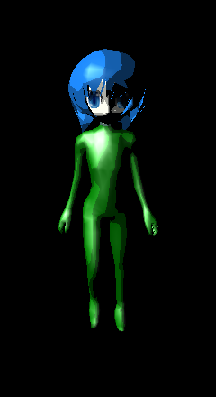
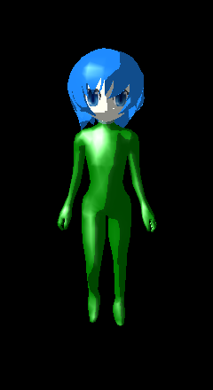

第 09 回
トゥーン(アニメ調)の陰影
この回の目標
- 明るさを「段」にして、アニメのような陰影を付けられる。
- グラデーションの画像で、明るさを色に置き換える方法が分かる。
開くサンプル

samples/A15_SkinMesh4_DirLight_Toon
テンプレート: templates/09_toon.dxtemplate
キャラクター(スキンメッシュ)が、2〜3 段にくっきり分かれた陰影で描かれます。
しくみ
ふつうのライトの明るさは 0〜1 のなめらかな数です。トゥーンでは、この数をグラデーションの画像の横の位置として使い、その位置の色を明るさの代わりにします。
GradTex.bmp(横 256 × 縦 8 画素)を横に引き伸ばして表示したもの。画像が「段」になっていれば、陰影も段になります。画像を描き換えるだけで、段の数や色を変えられます。
読むところ
src/main.cpp
C++GradTexHandle = LoadGraph( "GradTex.bmp" ) ;
SetUseTextureToShader( 1, GradTexHandle ) ; // 1 番(t1)に置く。0 番はモデルのテクスチャ
shaders/SkinMesh4_DirLight_ToonVS.hlsl
HLSL(シェーダー)lTotalLightGen += lLightLitDest.y ; // 07 と同じ明るさ(0〜1)
…
VSOutput.ToonCoords0 = lTotalLightGen ; // それをテクスチャ座標として渡す
- スキンメッシュ(アニメーションで体が曲がるモデル)なので、頂点を複数のボーンの行列で動かす処理が前に入っています(仕様書 8.4)。
shaders/SkinMesh4_DirLight_ToonPS.hlsl
HLSL(シェーダー)ToonColor = ToonTexture.Sample( ToonTextureSampler, PSInput.ToonCoords0 ) ; // 明るさの位置の色
PSOutput.Color0.rgb = saturate( PSInput.Diffuse.rgb * ToonColor.rgb + PSInput.Specular.rgb ) * TextureDiffuseColor.rgb ;
課題
- ★9-1
GradTex.bmpを描き換えて、段の数や色を変える(ペイントソフトで横 256 × 縦 8 画素の画像を作る)。 - ★★9-2画像を使わずに、明るさ 0.5 を境に 2 段にする(
? :やstepを使う)。 - ★★★9-3輪郭線を付ける。モデルをもう一度、法線の方向に少し膨らませて裏側だけ黒で描く(頂点シェーダーで座標を法線の方向にずらす)。
解答例: 9-2 → answers/09_step_toon(【課題 9-2】 の所)
解答例を動かした画面
元のサンプル(A15)

answers/09_step_toon(2 段)